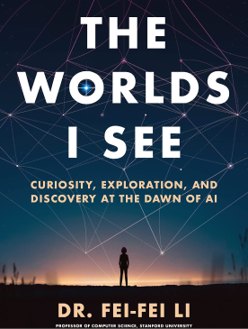
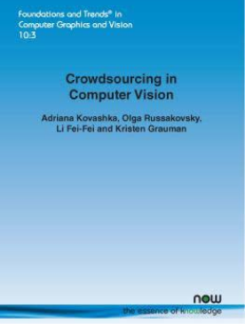

NEWS
Computer vision : Shining light on the digital world
Big Data abstracts / Big Data Digest reporter : Wei Zimin
When it comes to young leaders in the field of computer vision, there should be no one more representative than Fei Fei Li. As a tenured professor in the Department of Computer Science at Stanford University and the chief scientist of Google Cloud, Fei Fei Li has led the exploration of new directions that closely integrate academia and industry. And her role as a woman gives her a new and different perspective in the exploration of artificial intelligence diversity.
More books...

The Worlds I See: Curiosity, Exploration, and Discovery at the Dawn of AI

Crowdsourcing in Computer Vision
Computer Vision: From 3d Reconstruction to Visual ...
Nanking 1937: Memory and Healing
The Worlds I See: Curiosity, Exploration, and Discovery at the Dawn of AI
Author : Fei-Fei Li
The global scientific and technological community praised Fei-Fei Li as "the conscience of the AI community.
Former US President Barack Obama recommended the required books for the "AI Rise Era"
Financial Times' Best Science and Technology Book of the Year
Amazon edits and selects books
Something related to the book...
VIDEO
Will AI rule the world? Fei fei Li cracked the popular myth - YouTube
VIDEO
How to face the unknown challenges of AI? Fei fei Li points out the key -YouTube
VIDEO
Advice to Young Readers from Feifei Li, the Pioneer of AI - YouTube
Crowdsourcing in Computer Vision
Author : Fei-Fei Li
Introduction
Computer vision systems require large amounts of manually annotated data to properly learn challenging visual concepts. Crowdsourcing platforms offer an inexpensive method to capture human knowledge and understanding, for a vast number of visual perception tasks.
Computer Vision: From 3d Reconstruction to Visual Recognition
Author : Fei-Fei Li / Savarese, Silvio
Introduction
When a 3-dimensional world is projected onto a 2-dimensional image, such as the human retina or a photograph, reconstructing back the layout and contents of the real-world becomes an ill-posed problem that is extremely difficult to solve. Humans possess the remarkable ability to navigate and understand the visual world by solving the inversion problem going from 2D to 3D.